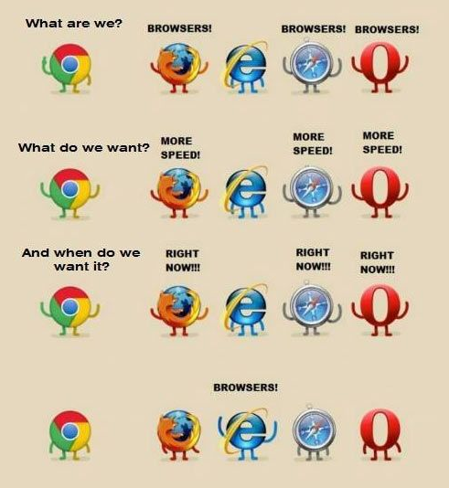

History
The first browser, Mosaic, the browser wars, Firefox, Chrome, and the modern browser market.
Open HistoryIT 3203 Project Milestone 3
Research Topic Overview
A web browser is the application people open to visit websites. A browser engine is the major internal component that reads web content and helps turn HTML, CSS, JavaScript, images, and other resources into the page shown on the screen.
This project follows the development of browsers from the first browser at CERN to the modern Blink, WebKit, and Gecko engines. It also explains why browser standards, competition, privacy, security, and mobile support still matter.

The browser is the complete application used by the user. It includes the address bar, tabs, bookmarks, history, downloads, privacy settings, developer tools, and other controls.
The engine handles much of the work behind the page. It parses HTML, applies CSS, calculates layout, works with JavaScript, and paints the visual result. Different browsers can share the same engine.
StatCounter's worldwide data for June 2026 shows that Chrome remains the largest browser by a wide margin. Market share does not measure quality by itself, but it helps explain why Chromium and Blink have so much influence on modern web development.
| Browser | Share | Main engine |
|---|---|---|
| Chrome | 69.65% | Blink |
| Safari | 15.31% | WebKit |
| Edge | 5.21% | Blink |
| Firefox | 3.33% | Gecko |
| Samsung Internet | 1.95% | Blink |
| Opera | 1.74% | Blink |
Source: StatCounter Global Stats, June 2026. See the References page.
The first browser, Mosaic, the browser wars, Firefox, Chrome, and the modern browser market.
Open HistoryHow rendering works and how Blink, WebKit, and Gecko compare.
Open EnginesInteroperability, privacy, performance, mobile use, and engine diversity.
Open FutureA glossary of important browser, HTML, CSS, JavaScript, and standards terms.
Open Concepts